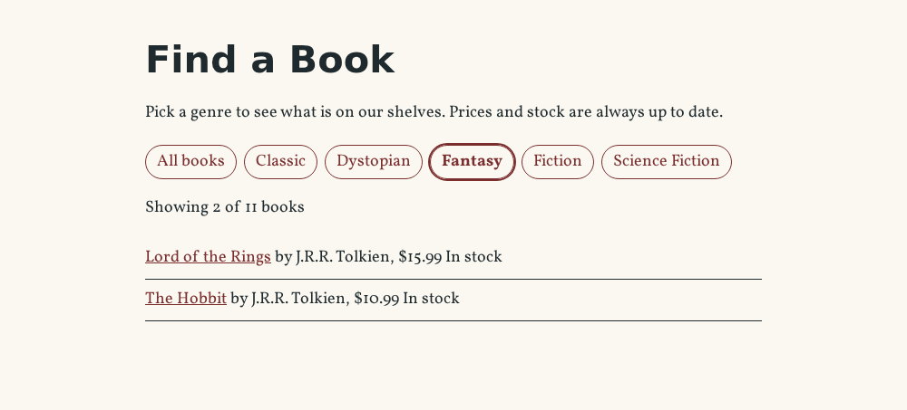

⚡ Lesson 6.4: The Interactivity API
A customer on the Pages & Co. site wants the fantasy books, then the dystopian ones, then everything again. With what you have built so far, each choice is a new page load. Today the shop gets a catalog that filters instantly in the browser, and you get WordPress's own answer to front-end interactivity: the server renders the finished HTML with a few data-wp-* attributes, and a small store of state and actions, written in a JavaScript module, takes over in the browser. No hand-written DOM code, no React on the front end, and the page works before (and without) the JavaScript.
🎯 Learning Objectives
By the end of this lesson, you will be able to:
- Explain how the Interactivity API splits the work: server-rendered HTML with directives, then hydration by a store in a script module
- Scaffold an interactive block into the plugin, and build its
viewScriptModulewith--experimental-modules - Set state and per-element context in PHP with
wp_interactivity_state()andwp_interactivity_data_wp_context(), including derived state the server can compute - Write a store with
store(), state getters,getContext()and actions, and connect it withdata-wp-on,bind,classandtext - Build interactive features that stay accessible and keep working without JavaScript
In This Lesson
🎭 Interactivity, the WordPress Way
Lesson 6.3's Book List can show one genre, chosen by an editor. Letting visitors choose needs JavaScript on the front end, and there are three classic ways to add it: hand-written JavaScript in a viewScript that finds elements and toggles them (fine for one button, a tangle for a catalog); a React app on the front end (a big download, and the page is empty until it runs); or the Interactivity API, WordPress's standard since 6.5, which core's own Navigation, Image lightbox, Search and Query pagination blocks use.
Its idea fits what you already know. render.php keeps rendering the real HTML on the server, so visitors and search engines get a complete page. Into that HTML you write directives, attributes such as data-wp-on--click="actions.selectGenre" or data-wp-bind--hidden="!state.isVisible", which declare how the element depends on data. The data, the state, starts in PHP and is sent to the browser as JSON. In the browser, a store in a script module holds the same state plus the actions that change it, and the Interactivity runtime (@wordpress/interactivity, about the size of a small image) keeps every directive in step whenever state changes. You never write querySelector or classList.toggle.
💡 Mental model: the stage and the lighting desk
The server builds the stage: every book is on it, every genre link, finished and visible. Directives are cables from each light on the stage to a fader on the lighting desk ("this book is lit while isVisible is true"). The store is the desk: move the genre fader, and every light wired to it changes at once. You only ever touch the faders; the cables do the rest.
Two consequences make the API different from a front-end framework. First, the server evaluates directives too: when it renders data-wp-bind--hidden="!state.isVisible", WordPress computes the value in PHP and writes hidden into the HTML, so the page is correct before any JavaScript runs. Second, all the JavaScript is shared: one runtime for every interactive block on the page, loaded as a native ES module.
🏗️ Scaffolding an Interactive Block
Interactive blocks have their own create-block template, a separate npm package. It works with --no-plugin like the others. In the plugin's folder:
npx @wordpress/create-block@latest book-filter --no-plugin --template @wordpress/create-block-interactive-template --target-dir=src/blocks/book-filter --namespace=pagesco --textdomain=pagesco-booksOutput
...
Creating a "block.json" file.
...
Code is PoetryThe first ... includes "Downloading template files"; the others name your folder. What it wrote, and the parts of block.json that make it interactive:
cd wp-content/plugins/pagesco-books/src/blocks/book-filter
ls
grep -E '"(interactivity|viewScriptModule)"' block.json
cat view.jsOutput
README.md block.json edit.js editor.scss index.js render.php style.scss view.js
"interactivity": true
"viewScriptModule": "file:./view.js"
import { store, getContext } from '@wordpress/interactivity';
const { state } = store( 'pagesco', {
state: {
get themeText() {
return state.isDark ? state.darkText : state.lightText;
}
},
actions: {
toggleOpen() {
const context = getContext();
context.isOpen = ! context.isOpen;
},
toggleTheme() {
state.isDark = ! state.isDark;
}
},
callbacks: {
logIsOpen: () => {
const { isOpen } = getContext();
// Log the value of `isOpen` each time it changes.
console.log( `Is open: ${ isOpen }` );
},
},
} );"supports": { "interactivity": true }tells WordPress the block's markup contains directives, so the server processes them when it renders the block."viewScriptModule": "file:./view.js"is the front-end code, loaded as a script module (<script type="module">) only on pages that contain the block. Script modules are WordPress's (6.5+) way of loading native JavaScript modules, with an import map that points@wordpress/interactivityat core's copy.view.jscallsstore( 'pagesco', { state, actions, callbacks } ). The first argument is the store's namespace; the scaffold used the block namespace, but a store namespace should be unique to the feature, so yours will bepagesco/book-filter.
The scaffold's demo (a dark-mode toggle and an open/close paragraph) is worth a read and then it goes, together with README.md and editor.scss, which the shop's block does not need:
cd wp-content/plugins/pagesco-books/src/blocks/book-filter
rm README.md editor.scssBuilding script modules
One more switch, once per plugin. wp-scripts build builds classic scripts by default and silently skips viewScriptModule files; the option --experimental-modules adds a second build for modules (Common Mistake 1 shows the silent version). Replace package.json in pagesco-books, adding the option to both scripts:
{
"name": "pagesco-books",
"version": "1.0.0",
"private": true,
"description": "The blocks of the Pages & Co. Books plugin.",
"license": "GPL-2.0-or-later",
"scripts": {
"build": "wp-scripts build --webpack-src-dir=src/blocks --output-path=build/blocks --blocks-manifest --experimental-modules",
"start": "wp-scripts start --webpack-src-dir=src/blocks --output-path=build/blocks --blocks-manifest --experimental-modules"
},
"devDependencies": {
"@wordpress/scripts": "^37.0.0"
}
}"Experimental" refers to the build option's name, which has stayed while module support matured; core's own interactive blocks, and create-block's interactive template, rely on it. No other block changes: the Book Card and the Book List build exactly as before.
🖥️ The Server Side: State, Context, Directives
The Book Filter shows the whole catalog with a row of genre links on top and a sentence "Showing 2 of 11 books". It has no attributes: it is the same on every page. Replace src/blocks/book-filter/block.json:
{
"$schema": "https://schemas.wp.org/trunk/block.json",
"apiVersion": 3,
"name": "pagesco/book-filter",
"version": "0.1.0",
"title": "Book Filter",
"category": "widgets",
"icon": "filter",
"description": "The whole catalog, with genre buttons that filter it instantly.",
"keywords": [ "books", "genres", "catalog" ],
"textdomain": "pagesco-books",
"supports": {
"html": false,
"interactivity": true,
"color": {
"background": true,
"text": true,
"link": true
},
"spacing": {
"margin": true,
"padding": true
}
},
"editorScript": "file:./index.js",
"style": "file:./style-index.css",
"render": "file:./render.php",
"viewScriptModule": "file:./view.js"
}The design decision comes before any code: what is the state? Only one thing changes when a customer clicks, the selected genre, so the state is one string, genre, empty for "All books". Everything else is derived from it: whether a book is visible, whether a link is the current one, how many books show. Each book and each link also needs to know something about itself (its genres, its slug); that is context, data attached to an element and visible to the directives inside it. Replace src/blocks/book-filter/render.php:
<?php
/**
* Renders the Book Filter: genre links and the whole catalog, with Interactivity API directives.
*
* The server prints the finished HTML (filtered already if the URL says ?genre=…), and the
* view.js store takes over in the browser. $attributes, $content and $block as in Lesson 6.3.
*
* @package PagesCo\Books
*/
use PagesCo\Books\BookPostType;
use PagesCo\Books\GenreTaxonomy;
use PagesCo\Books\Shortcodes\BookShortcode;
$books = get_posts(
array(
'post_type' => BookPostType::NAME,
'post_status' => 'publish',
'posts_per_page' => 100,
'orderby' => 'title',
'order' => 'ASC',
)
);
$genres = get_terms(
array(
'taxonomy' => GenreTaxonomy::NAME,
'hide_empty' => true,
)
);
$genres = is_array( $genres ) ? $genres : array();
// Each book's genre slugs, in the same order as $books.
$book_genres = array();
foreach ( $books as $book ) {
$terms = get_the_terms( $book, GenreTaxonomy::NAME );
$book_genres[] = is_array( $terms ) ? wp_list_pluck( $terms, 'slug' ) : array();
}
// A genre in the address (?genre=fantasy) is the starting filter, so the links work without JavaScript.
$selected = isset( $_GET['genre'] ) ? sanitize_key( wp_unslash( $_GET['genre'] ) ) : '';
if ( ! in_array( $selected, wp_list_pluck( $genres, 'slug' ), true ) ) {
$selected = '';
}
wp_interactivity_state(
'pagesco/book-filter',
array(
'genre' => $selected,
'bookGenres' => $book_genres,
// Derived state: the server runs these closures while it processes the directives.
'isVisible' => function () {
$state = wp_interactivity_state();
$context = wp_interactivity_get_context();
return '' === $state['genre'] || in_array( $state['genre'], $context['genres'], true );
},
'isSelected' => function () {
$state = wp_interactivity_state();
$context = wp_interactivity_get_context();
return $state['genre'] === $context['slug'];
},
'visibleCount' => function () {
$state = wp_interactivity_state();
$count = 0;
foreach ( $state['bookGenres'] as $slugs ) {
if ( '' === $state['genre'] || in_array( $state['genre'], $slugs, true ) ) {
++$count;
}
}
return $count;
},
)
);
$card = new BookShortcode();
$links = array_merge(
array( '' => __( 'All books', 'pagesco-books' ) ),
wp_list_pluck( $genres, 'name', 'slug' )
);
?>
<div <?php echo get_block_wrapper_attributes(); ?> data-wp-interactive="pagesco/book-filter">
<nav class="wp-block-pagesco-book-filter__genres" aria-label="<?php esc_attr_e( 'Filter by genre', 'pagesco-books' ); ?>">
<?php foreach ( $links as $slug => $name ) : ?>
<a
href="<?php echo esc_url( '' === $slug ? remove_query_arg( 'genre' ) : add_query_arg( 'genre', $slug ) ); ?>"
<?php echo wp_interactivity_data_wp_context( array( 'slug' => (string) $slug ) ); ?>
data-wp-on--click="actions.selectGenre"
data-wp-bind--aria-current="state.isSelected"
data-wp-class--is-selected="state.isSelected"
><?php echo esc_html( $name ); ?></a>
<?php endforeach; ?>
</nav>
<p class="wp-block-pagesco-book-filter__count" aria-live="polite">
<?php
printf(
/* translators: 1: number of books shown, 2: number of books in the catalog. */
esc_html__( 'Showing %1$s of %2$s books', 'pagesco-books' ),
'<span data-wp-text="state.visibleCount"></span>',
esc_html( number_format_i18n( count( $books ) ) )
);
?>
</p>
<ul class="wp-block-pagesco-book-filter__books">
<?php foreach ( $books as $index => $book ) : ?>
<li
<?php echo wp_interactivity_data_wp_context( array( 'genres' => $book_genres[ $index ] ) ); ?>
data-wp-bind--hidden="!state.isVisible"
><?php echo wp_kses_post( $card->render( array( 'id' => $book->ID ) ) ); ?></li>
<?php endforeach; ?>
</ul>
</div>From the top:
- The data. All published books in title order, the genres that have books, and each book's genre slugs.
get_the_terms()reads from the term cache thatget_posts()filled, so the loop runs no extra queries. - The starting genre comes from the address.
?genre=fantasyis user input:wp_unslash(),sanitize_key(), and then a check against the real slugs (Lesson 5.3: validate against what is allowed). Anything else means "All books". wp_interactivity_state( 'pagesco/book-filter', array( … ) )sets the store's initial state on the server. Plain values (genre,bookGenres) are sent to the browser as JSON. Closures are derived state: while WordPress processes the directives it calls them, and inside themwp_interactivity_state()(without arguments) andwp_interactivity_get_context()return the current namespace's state and the context of the element being processed. Their results go into the HTML, not into the JSON.data-wp-interactive="pagesco/book-filter"on the wrapper names the store; every directive inside refers to it.wp_interactivity_data_wp_context( $array )prints adata-wp-contextattribute with the array as JSON, quoted and escaped correctly. Each link gets{"slug":"fantasy"}, each list item{"genres":[…]}.- The directives.
data-wp-on--clickruns an action;data-wp-bind--aria-currentanddata-wp-bind--hiddenset an attribute from a value (!negates);data-wp-class--is-selectedadds or removes a class;data-wp-textsets an element's text. The links are real links (add_query_arg(),esc_url()), the count sentence is translated in PHP with the numbers as placeholders, and every book line is Lesson 5.5's formatter again, escaped where printed.
| Directive | Does | Processed on the server too |
|---|---|---|
data-wp-interactive | names the store for this element and its children | yes |
data-wp-context | attaches local data, merged with parents' context | yes |
data-wp-bind--attr | sets or removes an attribute | yes |
data-wp-class--name | adds or removes a class | yes |
data-wp-style--prop | sets a CSS property | yes |
data-wp-text | sets the text content | yes |
data-wp-each | repeats a <template> for each item of a list | yes |
data-wp-on--event, data-wp-on-async--event | runs an action on a DOM event (on-async for actions that need nothing from the event right away) | no (browser only) |
data-wp-watch, data-wp-init, data-wp-run | run a callback when its state changes, once on start, or on every render | no |
The styles, then index.js and an edit.js that previews the block with Lesson 6.3's ServerSideRender (a filter is for visitors; the editor only needs to show where it is). Replace src/blocks/book-filter/style.scss, src/blocks/book-filter/index.js and src/blocks/book-filter/edit.js:
.wp-block-pagesco-book-filter__genres {
display: flex;
flex-wrap: wrap;
gap: 0.5rem;
}
.wp-block-pagesco-book-filter__genres a {
padding: 0.25rem 0.75rem;
border: 1px solid currentColor;
border-radius: 999px;
text-decoration: none;
}
.wp-block-pagesco-book-filter__genres a.is-selected {
outline: 2px solid currentColor;
font-weight: 700;
}
.wp-block-pagesco-book-filter__books {
list-style: none;
padding-left: 0;
}
.wp-block-pagesco-book-filter__books li {
padding: 0.5rem 0;
border-bottom: 1px solid currentColor;
}import { registerBlockType } from '@wordpress/blocks';
import './style.scss';
import Edit from './edit';
import metadata from './block.json';
registerBlockType( metadata.name, {
edit: Edit,
} );import { useBlockProps } from '@wordpress/block-editor';
import ServerSideRender from '@wordpress/server-side-render';
export default function Edit() {
// A preview from render.php; the filter itself works on the front end.
return (
<div { ...useBlockProps() }>
<ServerSideRender
block="pagesco/book-filter"
skipBlockSupportAttributes
/>
</div>
);
}Build (the scaffold's view.js is still there; the next section replaces it) and put the block on a test page:
npm run build > /dev/null
ls build/blocks/book-filterOutput
block.json
index.asset.php
index.js
render.php
style-index-rtl.css
style-index.css
view.asset.php
view.js<!-- wp:pagesco/book-filter /-->Now ask for the fantasy books, with curl, which runs no JavaScript at all. The count, the Fantasy link, and how many list items the server already hid:
curl -s 'http://localhost:8080/filter-test/?genre=fantasy' > filter.html
grep -o 'Showing <span data-wp-text="state.visibleCount">[0-9]*</span> of [0-9]* books' filter.html
grep -o '<a aria-current="true" class="is-selected"' filter.html
grep -c '<li hidden' filter.htmlOutput
Showing <span data-wp-text="state.visibleCount">2</span> of 11 books
<a aria-current="true" class="is-selected"
9The server ran the directives: it filled data-wp-text with 2, added aria-current="true" and the class to the Fantasy link (and aria-current="false" to the others: aria- attributes get the words), and wrote hidden on the nine books that are not fantasy. A visitor gets the filtered page from the server. And the state JSON that travels with it:
grep -A 1 'id="wp-script-module-data-@wordpress/interactivity"' filter.html
rm filter.htmlOutput
<script id="wp-script-module-data-@wordpress/interactivity" type="application/json">
{"state":{"pagesco/book-filter":{"genre":"fantasy","bookGenres":[["classic","dystopian","fiction"],["classic","fiction"],["dystopian","fiction","science-fiction"],["fiction","science-fiction"],["dystopian","fiction","science-fiction"],["fantasy","fiction"],["classic","fiction"],["classic","fiction"],["classic","fiction"],["fantasy","fiction"],["classic","fiction"]],"isVisible":{},"isSelected":{},"visibleCount":{}}},"derivedStateClosures":{"pagesco/book-filter":["state.isSelected","state.visibleCount","state.isVisible"]}}genre and bookGenres are there as values. The closures cannot travel (PHP code means nothing to a browser), so they arrive as empty objects, and derivedStateClosures lists them: it tells the runtime "these are derived on the server; the store must provide its own getters", which is the next section's job.
🧠 The Browser Side: the Store
Replace src/blocks/book-filter/view.js:
import { store, getContext, withSyncEvent } from '@wordpress/interactivity';
const { state } = store( 'pagesco/book-filter', {
state: {
// The same derived state as the closures in render.php, for the browser.
get isVisible() {
const { genres } = getContext();
return state.genre === '' || genres.includes( state.genre );
},
get isSelected() {
return getContext().slug === state.genre;
},
get visibleCount() {
return state.bookGenres.filter(
( genres ) => state.genre === '' || genres.includes( state.genre )
).length;
},
},
actions: {
// withSyncEvent: this action needs the event right away, to stop the link.
selectGenre: withSyncEvent( ( event ) => {
event.preventDefault();
state.genre = getContext().slug;
// Keep the address in step, so a reload or a shared link shows the same list.
const url = new URL( window.location.href );
if ( state.genre ) {
url.searchParams.set( 'genre', state.genre );
} else {
url.searchParams.delete( 'genre' );
}
window.history.replaceState( null, '', url );
} ),
},
} );store( namespace, definition )registers, or extends, the store whose namespace the HTML names. The runtime merges the server's state JSON intostate, sostate.genreandstate.bookGenresalready hold the server's values when the page starts.store()returns the store, andconst { state } = …keeps a reference for the getters and actions.- Getters are derived state, the JavaScript twins of the PHP closures, and must compute the same answers, or the page would change on hydration.
getContext()returns the context of the element the directive is on: the book'sgenresforisVisible, the link'sslugforisSelected. The runtime tracks what each getter reads, so whenstate.genrechanges it recomputes exactly the directives that depend on it. - Actions change state.
selectGenresetsstate.genre, and that one assignment is all it takes: elevenhiddenattributes, six links and the count update themselves. withSyncEvent(). The runtime normally runs actions a moment later, so long tasks do not block the page (better for the Interaction to Next Paint score, Lesson 8.2). An action that must use the event synchronously (hereevent.preventDefault(), so the link is not followed) says so withwithSyncEvent(). Common Mistake 2 shows what happens without it.history.replaceState()puts?genre=…into the address without a page load, so a reload or a shared link shows the same list, rendered by the server.
npm run build > /dev/null
cat build/blocks/book-filter/view.asset.phpOutput (your version hash will differ)
<?php return array(
'dependencies' => array(
'@wordpress/interactivity'
),
'version' => '2de75b133a97932c8a8c',
'type' => 'module'
);Compare it with Lesson 6.1's index.asset.php: the dependency is a module ID, @wordpress/interactivity, not a script handle, and 'type' => 'module' marks the file as a module. The page now loads it, only because the block is on it:
curl -s http://localhost:8080/filter-test/ | grep -o 'id="pagesco-book-filter-view-script-module-js-module"'
curl -s http://localhost:8080/filter-test/ | grep -o '"@wordpress/interactivity":"[^"?]*'
curl -s http://localhost:8080/about/ | grep -c 'pagesco-book-filter-view-script-module'Output
id="pagesco-book-filter-view-script-module-js-module"
"@wordpress/interactivity":"http://localhost:8080/wp-includes/js/dist/script-modules/interactivity/index.js
0A <script type="module"> with the ID WordPress derived from the block name, an import map entry that resolves @wordpress/interactivity to core's file, and nothing on the About page.
In the browser
Open http://localhost:8080/filter-test/, click Fantasy, then Science Fiction, then All books, with the developer tools' Console open. The list changes instantly, the address bar follows, and the Console stays empty. To check this in a real browser for this lesson, the clicks were scripted with Playwright (Chromium) on a WordPress 7.1 site built by this lesson, on the project's Find a Book page, which holds the same block; after each step the script read the count, the visible books, the link with aria-current="true" and the address, and at the end it counted the page loads and the Console messages:
Loaded Showing 11 of 11 books current: All books address: /find-a-book/
visible: all 11
Clicked Fantasy Showing 2 of 11 books current: Fantasy address: /find-a-book/?genre=fantasy
visible: Lord of the Rings, The Hobbit
Clicked Science Fiction Showing 3 of 11 books current: Science Fiction address: /find-a-book/?genre=science-fiction
visible: Brave New World, Dune, Fahrenheit 451
Clicked All books Showing 11 of 11 books current: All books address: /find-a-book/
visible: all 11
Page loads: 1
Console: (empty)The last line is the point of the whole lesson: three filters, one page load. The ?genre= addresses are shareable, and when someone opens one, the server renders that filter directly.

♿ Without JavaScript, and for Everyone
The genre choices are links to ?genre=… addresses, and the server can render every one of them. So the filter also works when the module fails to load, a browser extension blocks it, or the visitor clicks before it arrives: the link is followed, and the server sends the filtered page. The same Playwright script with JavaScript switched off, clicking Fantasy:
Loaded Showing 11 of 11 books current: All books address: /find-a-book/
visible: all 11
Clicked Fantasy Showing 2 of 11 books current: Fantasy address: /find-a-book/?genre=fantasy
visible: Lord of the Rings, The Hobbit
Page loads: 2
Console: (empty)Same result, one page load more. This is progressive enhancement: the HTML works on its own, and JavaScript makes it faster. It came almost for free because the state starts in PHP and the derived values have PHP closures, so the server and the browser agree on every directive.
✅ Accessible by construction
- Real links in a
<nav>with anaria-label: keyboard users tab to them and press Enter; screen readers announce "Filter by genre, navigation". aria-current="true"on the selected link tells assistive technology which filter is active; the bold outline shows it visually, not by color alone.- The count paragraph has
aria-live="polite", so a screen reader announces "Showing 2 of 11 books" after a click, the feedback a sighted user gets from the shorter list. - Hidden books use the
hiddenattribute, which removes them from the page and from the accessibility tree, not just from view.
🧩 Version note: withSyncEvent() and its warning
withSyncEvent() arrived in WordPress 6.8, together with the change that runs actions asynchronously. Since then, an action that calls event.preventDefault() without it still works, but the runtime logs a deprecation warning that, word for word in 7.1, says it "will stop working in WordPress 7.0". It has not stopped in 7.1; do not wait for it to. On 6.5 to 6.7 sites, withSyncEvent does not exist and the import fails; the plugin's minimum of 6.8 rules those out.
⚠️ Common Mistakes
1. Building without --experimental-modules
Every tutorial's package.json that predates interactive blocks has the plain build script. Take the option out again (keeping a copy) and build:
cd wp-content/plugins/pagesco-books
cp package.json package.json.bak
sed -i 's/ --experimental-modules//' package.json
grep '"build"' package.jsonOutput
"build": "wp-scripts build --webpack-src-dir=src/blocks --output-path=build/blocks --blocks-manifest",npm run build 2>&1 | tail -n 1
ls build/blocks/book-filterOutput (your timing will differ)
webpack 5.112.2 compiled successfully in 646 ms
block.json
index.asset.php
index.js
render.php
style-index-rtl.css
style-index.csscurl -s http://localhost:8080/filter-test/ | grep -c 'pagesco-book-filter-view-script-module'Output
0What it means: "compiled successfully", and no view.js or view.asset.php in the build. block.json still names file:./view.js, but the file is missing, so WordPress registers no module and the page has no script for the block: no warning in the build, in PHP or in the browser. The page even looks right, because the server rendered it; only clicking reveals it (every click is a full page load). Fix: --experimental-modules in both scripts, and after a build, check that view.js is in build/. Restore and rebuild:
mv wp-content/plugins/pagesco-books/package.json.bak wp-content/plugins/pagesco-books/package.jsonnpm run build > /dev/null
ls build/blocks/book-filter | grep viewOutput
view.asset.php
view.js2. preventDefault() without withSyncEvent()
Written the natural way, as a plain method, the action looks like this:
selectGenre( event ) {
event.preventDefault();
state.genre = getContext().slug;
// …
},Built that way, the filter works, and the browser's Console says (recorded with Playwright in Chromium on WordPress 7.1, after one click):
Loaded Showing 11 of 11 books current: All books address: /find-a-book/
visible: all 11
Clicked Fantasy Showing 2 of 11 books current: Fantasy address: /find-a-book/?genre=fantasy
visible: Lord of the Rings, The Hobbit
Page loads: 1
Console: [warning] Using the synchronous event.preventDefault() function in a store action without wrapping it in withSyncEvent() is deprecated and will stop working in WordPress 7.0. Please wrap the store action in withSyncEvent().What it means: since 6.8 the runtime may run actions after the browser has finished handling the event, and by then preventDefault() would be too late: the link would be followed. For now it detects the call and handles the event synchronously anyway, with this deprecation warning. Fix: wrap every action that uses event.preventDefault(), stopPropagation() or currentTarget in withSyncEvent(); actions that do not touch the event need nothing.
3. A store namespace that does not match
The HTML says data-wp-interactive="pagesco/book-filter"; a typo in view.js registers store( 'pagesco/bookfilter', … ). The build is fine, the page loads without a message in the Console, and clicking Fantasy… shows the two fantasy books. Recorded with Playwright, with a marker in window to detect page loads:
After clicking Fantasy: Showing 2 of 11 books
Address: /find-a-book/?genre=fantasy
window.__marker: gone (the page was reloaded)
Console: (empty)What it means: no store answers to pagesco/book-filter, so none of the directives is wired up and the click simply follows the link; the server renders the filtered page, which is correct, just slow. Progressive enhancement hides the bug, which is good for visitors and bad for you. Fix: one constant spelling of the namespace in render.php and view.js; when testing an interactive block, watch whether the page reloads (the browser's tab spinner, or the Network panel's Doc filter), not only whether the result is right.
🛠️ Project: A Find a Book Page
The Book Filter gets its own page in the shop, which the header menu picks up by itself. Allow about 30 minutes.
🛠️ Step 1: Create the page (10 min)
Add a page "Find a Book" with a short introduction and the Book Filter (in the editor: a paragraph, then type /book filter). The Code editor shows:
<!-- wp:paragraph -->
<p>Pick a genre to see what is on our shelves. Prices and stock are always up to date.</p>
<!-- /wp:paragraph -->
<!-- wp:pagesco/book-filter /-->http://localhost:8080/find-a-book/?genre=dystopian (the count, as text)Output
Showing 3 of 11 books🛠️ Step 2: Test it like a customer (10 min)
In the browser, with the Console open: click through all five genres and back to All books (instant, no reload, no Console messages); reload on ?genre=classic (the server shows six classics, Classic outlined); press Tab to reach the links and Enter to choose one; then disable JavaScript in the developer tools' settings and click a genre (the page reloads, filtered). The scripted run of this step in Chromium, for comparison:
Loaded Showing 11 of 11 books current: All books address: /find-a-book/
visible: all 11
Clicked Classic Showing 6 of 11 books current: Classic address: /find-a-book/?genre=classic
visible: 1984, Animal Farm, Pride and Prejudice, The Catcher in the Rye, The Great Gatsby, To Kill a Mockingbird
Clicked Dystopian Showing 3 of 11 books current: Dystopian address: /find-a-book/?genre=dystopian
visible: 1984, Brave New World, Fahrenheit 451
Clicked Fantasy Showing 2 of 11 books current: Fantasy address: /find-a-book/?genre=fantasy
visible: Lord of the Rings, The Hobbit
Clicked Fiction Showing 11 of 11 books current: Fiction address: /find-a-book/?genre=fiction
visible: all 11
Clicked Science Fiction Showing 3 of 11 books current: Science Fiction address: /find-a-book/?genre=science-fiction
visible: Brave New World, Dune, Fahrenheit 451
Clicked All books Showing 11 of 11 books current: All books address: /find-a-book/
visible: all 11
Opened ?genre=classic Showing 6 of 11 books current: Classic address: /find-a-book/?genre=classic
visible: 1984, Animal Farm, Pride and Prejudice, The Catcher in the Rye, The Great Gatsby, To Kill a Mockingbird
Enter on Dystopian Showing 3 of 11 books current: Dystopian address: /find-a-book/?genre=dystopian
visible: 1984, Brave New World, Fahrenheit 451
Page loads: 2
Console: (empty)🛠️ Step 3: Clean up and check (10 min)
Delete the Filter test page, then check the menu, the block's files, the build script and the features (no new PHP feature this time: the block needed none):
wp post delete $(wp post list --post_type=page --name=filter-test --field=ID) --force > /dev/null
curl -s http://localhost:8080/ | grep -o '>Find a Book<'
ls wp-content/plugins/pagesco-books/src/blocks wp-content/plugins/pagesco-books/src/blocks/book-filter
grep -c 'experimental-modules' wp-content/plugins/pagesco-books/package.json
grep -c "::class," wp-content/plugins/pagesco-books/src/Plugin.phpOutput
>Find a Book<
wp-content/plugins/pagesco-books/src/blocks:
book-card book-filter book-list
wp-content/plugins/pagesco-books/src/blocks/book-filter:
block.json edit.js index.js render.php style.scss view.js
2
14In pagesco-plan.txt, under "Blocks", note: "Book Filter (interactive, 6.4): store pagesco/book-filter, state genre (from ?genre=), derived isVisible/isSelected/visibleCount in PHP closures + JS getters; page Find a Book. Build needs --experimental-modules."
✅ Project Completion Checklist
package.jsonbuilds with--experimental-modules, andbuild/blocks/book-filter/containsview.jsandview.asset.phprender.phpsets the state withwp_interactivity_state(), including three closures, and validates?genre=view.jsregisters thepagesco/book-filterstore with the same three getters and awithSyncEvent()action- The Find a Book page filters instantly, keeps the address in step, and shows the right books when opened with
?genre= - With JavaScript off, the genre links still filter; the Console shows no messages with it on
- The Filter test page is deleted
🏋️ Hands-on Exercises
Each exercise leaves the site as the project did. Try each one before you open the solution.
🏋️ Exercise 1: Every Filter from the Server
Using only curl, print the count sentence the server renders for each genre, for a genre that does not exist (romance), and for a hostile value (%3Cscript%3E, an encoded <script>).
💡 Hint
A shell for loop over the slugs, and grep -o for the number inside data-wp-text="state.visibleCount". What should render.php do with a slug it does not know?
✅ Solution
for genre in classic dystopian fantasy fiction science-fiction romance %3Cscript%3E; do
printf '%s: ' "$genre"
curl -s "http://localhost:8080/find-a-book/?genre=$genre" | grep -o 'visibleCount">[0-9]*' | grep -o '[0-9]*$'
doneOutput
classic: 6
dystopian: 3
fantasy: 2
fiction: 11
science-fiction: 3
romance: 11
%3Cscript%3E: 11Every real genre is filtered by the server; romance and the script fall back to all eleven books, because render.php accepts only slugs that exist. Nothing from the address reaches the page unchecked.
🏋️ Exercise 2: Look Inside the Server's State
Render the block in PHP with do_blocks(), then print what wp_interactivity_state( 'pagesco/book-filter' ) holds afterwards, writing closure for derived values.
💡 Hint
wp_interactivity_state() with a namespace and no array returns that namespace's state. A value is derived if it is an instanceof Closure.
✅ Solution
<?php
echo do_blocks( '<!-- wp:pagesco/book-filter /-->' ) ? "rendered\n" : "empty\n";
$state = wp_interactivity_state( 'pagesco/book-filter' );
foreach ( $state as $key => $value ) {
echo $key, ': ', $value instanceof Closure ? 'closure' : wp_json_encode( $value ), "\n";
}Output
rendered
genre: ""
bookGenres: [["classic","dystopian","fiction"],["classic","fiction"],["dystopian","fiction","science-fiction"],["fiction","science-fiction"],["dystopian","fiction","science-fiction"],["fantasy","fiction"],["classic","fiction"],["classic","fiction"],["classic","fiction"],["fantasy","fiction"],["classic","fiction"]]
isVisible: closure
isSelected: closure
visibleCount: closureThe state is a per-request registry: rendering the block filled it, and WordPress prints it as JSON in the page footer. Two Book Filters on one page would share this one state, which is what you want here (both would follow the same genre) and something to keep in mind for blocks that must be independent: per-instance data belongs in context. Remove the script: rm filter-state.php.
rm filter-state.php🏋️ Exercise 3: A Heading That Follows the Filter (Stretch)
Add an <h2> at the top of the block that reads "All books", or the selected genre's name, and changes with the filter. Give the state a genreNames map and a derived selectedName, on both sides. Check the server's output for ?genre=science-fiction, then (optionally) click in the browser, and undo.
💡 Hint
array_merge( array( '' => __( 'All books', 'pagesco-books' ) ), wp_list_pluck( $genres, 'name', 'slug' ) ) builds the map. The heading needs only data-wp-text="state.selectedName"; the getter in view.js is one line.
✅ Solution
cd wp-content/plugins/pagesco-books/src/blocks/book-filter
cp render.php render.php.bak
cp view.js view.js.bak
sed -i "s|^\t\t'genre' => \$selected,|&\n\t\t'genreNames' => array_merge( array( '' => __( 'All books', 'pagesco-books' ) ), wp_list_pluck( \$genres, 'name', 'slug' ) ),\n\t\t'selectedName' => function () {\n\t\t\t\$state = wp_interactivity_state();\n\t\t\treturn \$state['genreNames'][ \$state['genre'] ] ?? '';\n\t\t},|" render.php
sed -i 's|data-wp-interactive="pagesco/book-filter">|&\n\t<h2 class="wp-block-pagesco-book-filter__title" data-wp-text="state.selectedName"></h2>|' render.php
sed -i 's|^\t\tget isSelected() {|\t\tget selectedName() {\n\t\t\treturn state.genreNames[ state.genre ];\n\t\t},\n&|' view.js
grep -n -A 2 'get selectedName' view.jsOutput
10: get selectedName() {
11- return state.genreNames[ state.genre ];
12- },npm run build > /dev/nullhttp://localhost:8080/find-a-book/?genre=science-fiction (View Source: the heading)Output
<h2 class="wp-block-pagesco-book-filter__title" data-wp-text="state.selectedName">Science Fiction</h2>The server filled the heading through the closure; in the browser the getter keeps it in step. A map in state is the usual way to give JavaScript translated strings from PHP: the module has no translation functions of its own here, so PHP translates and the state carries the result. Undo:
cd wp-content/plugins/pagesco-books/src/blocks/book-filter
mv render.php.bak render.php
mv view.js.bak view.jsnpm run build > /dev/null🎯 Quick Quiz
🎯 Check Your Understanding
Question 1: What does --experimental-modules change in npm run build?
Question 2: A visitor opens /find-a-book/?genre=fantasy. What is in the HTML the server sends?
Question 3: Which directive keeps "Showing 2 of 11 books" up to date?
Question 4: Why does render.php give isVisible a PHP closure when view.js has a getter for it?
Question 5: view.js registers store( 'pagesco/bookfilter', … ) by mistake. A visitor clicks Fantasy. What happens?
❓ Common Questions at This Stage
When should I use the Interactivity API instead of a plain viewScript?
Use it whenever the front end has state that several elements depend on (a filter, tabs, a cart count, a "show more"), and especially when the server should render the starting state. A one-off script (a copy button, an analytics call) can stay a classic viewScript. A full application with its own routing is a job for a framework, often headless (Lesson 9.2). The Interactivity API sits in the large middle, where most WordPress sites live.
All eleven books are in the HTML. What about a catalog of 5,000?
Then filtering in the browser is the wrong design: the page would be huge. The next step is to fetch books on demand from the REST API in an async action (or with generator actions, function*, which the runtime supports for awaiting), render a page of results at a time, and keep the address in step as here. Module 7 builds the pagesco/v1/books endpoint such a filter would call; core's Query block does a version of this with the Interactivity router, which replaces a region of the page with the server's HTML for the next address.
Can two interactive blocks talk to each other?
Yes, through state: any block whose HTML uses data-wp-interactive="pagesco/book-filter" shares this store. A separate "genre menu" block in the sidebar could set state.genre, and the list would follow. Stores can also read other stores with store( 'other/namespace' ). Keep namespaces specific, so blocks only share on purpose.
Why not show the filter working in the editor?
View modules do not run in the editor, by design: the editor is for arranging content, and a click there should select the block, not filter it. ServerSideRender shows the starting state, which is enough to place it. If editors should choose a starting genre per page, that would become an attribute, passed into the state by render.php.
🌟 Going Further: Bonus Challenge
Add a "Hide sold-out books" checkbox. It is a second piece of state (hideSoldOut, from ?in-stock=1), each book's context gains inStock, and isVisible and visibleCount consider both, in PHP and in JavaScript. Bind the checkbox's checked with data-wp-bind--checked and handle data-wp-on--change. Does that action need withSyncEvent()? What should the address look like, and what does the page do without JavaScript, where a checkbox is not a link? (A small <form method="get"> with a submit button inside a <noscript> is one answer.)
📓 Learning Journal
Take five minutes to write in your learning journal (a notebook or a plain text file works fine). Jot down:
- Key concepts you learned today
- Techniques that clicked (and the ones that have not, yet)
- Questions or confusion to bring to the next session
- Ideas to try on your own
- Progress and feelings: how did this lesson go for you?
✍️ This lesson's prompt: For the Book Filter, write three short lists: the state, the derived state, and the context, and say for each item why it belongs in that list. Then pick an interactive feature you have seen on another site (an accordion, a "load more" button, a size picker) and design it the same way: what is the one piece of state, what is derived, what does each element need to know about itself, and how would it work without JavaScript?
📝 Lesson Summary
🎓 Key Takeaways
- The Interactivity API renders on the server and hydrates in the browser: directives in the HTML, state from PHP, a store in a script module
- Interactive blocks declare
"supports": { "interactivity": true }and aviewScriptModule;wp-scriptsbuilds modules only with--experimental-modules wp_interactivity_state()sets the starting state; closures in it are derived state the server evaluates, mirrored by getters inview.jswp_interactivity_data_wp_context()attaches per-element context;getContext()reads it in getters and actions- Actions change state and the runtime updates every directive; actions that use the event synchronously need
withSyncEvent() - Real links, server-rendered state and validated input make the feature work without JavaScript and for assistive technology
| You want | Write |
|---|---|
| A new interactive block | npx @wordpress/create-block@latest <slug> --no-plugin --template @wordpress/create-block-interactive-template --target-dir=src/blocks/<slug> --namespace=pagesco --textdomain=pagesco-books |
| Build modules | wp-scripts build … --experimental-modules |
| Starting state (PHP) | wp_interactivity_state( 'ns', array( 'genre' => $selected, 'isVisible' => function () { … } ) ); |
| Per-element data | <?php echo wp_interactivity_data_wp_context( array( 'slug' => $slug ) ); ?> |
| Wire the HTML | data-wp-interactive="ns", data-wp-on--click, data-wp-bind--hidden="!state.isVisible", data-wp-class--is-selected, data-wp-text |
| The store (JS) | const { state } = store( 'ns', { state: { get isVisible() { … } }, actions: { selectGenre: withSyncEvent( ( event ) => { … } ) } } ); |
🏆 What You've Accomplished
- You built the shop's first interactive block, with the same
render.phpskills as Lesson 6.3 and a store of under forty lines - You designed state, derived state and context, and made the server and the browser agree on all of it
- You kept the filter working without JavaScript, accessible, and shareable by address
- You gave the shop a Find a Book page
- You finished Module 6: a static block, a dynamic block, bindings and an interactive block, all in one plugin
🔭 Looking Ahead
Every block so far gets its data from PHP while the page is rendered. Module 7 opens the other door: in Lesson 7.1: Using the REST API you read and write the shop's data over HTTP, from the command line and from JavaScript with apiFetch. You have met the REST API in passing already (the editor's /wp/v2/genres request and the block-renderer route in Lesson 6.3, /wp/v2/books from Lesson 5.2), and you will see how authentication works, including application passwords. Lesson 7.2 then builds pagesco/v1 endpoints of the shop's own, the kind a Book Filter for 5,000 books would call.
📋 Before the Next Lesson
- Open the Find a Book page, try two genres and a reload, and check that the Console is quiet
- Make sure the Filter test page is gone and
npm run buildhas run on your final files - Open
http://localhost:8080/wp-json/wp/v2/booksin your browser and skim the JSON: Lesson 7.1 starts there
🌱 Encouragement for the Journey
Four lessons ago you had never built a block. Now your plugin has a static one, a dynamic one, a binding source and an interactive one, and you can explain where each one's data lives and who renders it. Front-end interactivity is where many PHP developers stop and hand over to someone else; you just built it the way WordPress core does, server first. If the store still feels unfamiliar, reread its forty lines once more tomorrow: they will look shorter.